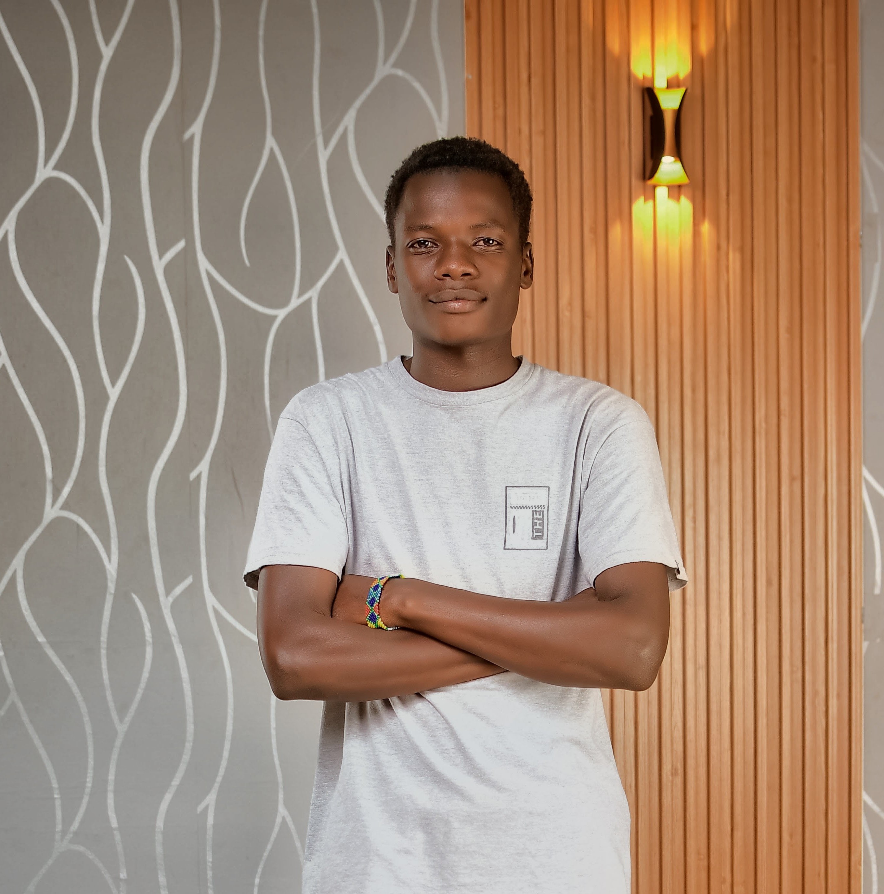

Dedan Kimathi University of TechnologyBSc. Telecommunications and Information Engineering
Fourth Year · Nyeri, Kenya
BSc. Telecommunications and Information EngineeringDedan Kimathi University of Technology (DeKUT) — Fourth Year
Hello, I'm
Telecommunications | Networking | AI & Machine Learning | Computer Vision | IoT
I am a fourth-year BSc. Telecommunications and Information Engineering student at Dedan Kimathi University of Technology (DeKUT), with hands-on experience in fiber-optic networks, FTTH installation, network configuration, and the Internet of Things (IoT), with interests in intelligent systems such as Artificial Intelligence (AI) and Machine Learning (ML).

A little about me
I am passionate about designing, developing, and maintaining reliable and intelligent communication systems. My technical interests include fiber-optic networks, wireless communication technologies, network security, Artificial Intelligence (AI), Machine Learning (ML), and the Internet of Things (IoT).
Through academic training, industrial attachment, and personal projects, I have gained practical experience in network deployment, troubleshooting, telecommunications infrastructure, and software development. I am also expanding my knowledge of AI and machine learning to explore innovative solutions to real-world engineering challenges.
My goal is to become a skilled Telecommunications and Network Engineer, contributing to the development of secure, efficient, and intelligent communication systems that connect the world while advancing my expertise in AI, machine learning, and emerging wireless technologies, particularly 5G.
Learn More About Me →BSc. Telecommunications and Information EngineeringDedan Kimathi University of Technology (DeKUT) — Fourth Year
ICT Authority Kenya — AI Training ProgrammeCompleted July 2026, with Pathways Technologies
Industrial AttachmentKimberley Telecommunications Network, Kapsabet · 2 March–15 May 2026
Focus AreasTelecoms, Networking, AI/ML, Computer Vision and IoT
What I work with
Selected work
Water-level monitoring project using an ultrasonic sensor to measure water distance and display readings locally.
Key FeaturesA proposed system for monitoring and managing network devices such as routers and ONUs through a central interface.
Planned FeaturesComputer-vision workflow designed to detect vehicles and recognize licence plates in recorded video, then track vehicles across frames.
Key FeaturesA completed Arduino-based home automation project integrating sensors and control components to demonstrate automated responses to environmental conditions, motion, time, and temperature.
Components UsedLearning
Dedan Kimathi University of TechnologyBSc. Telecommunications and Information Engineering
Fourth Year · Nyeri, Kenya
Chewoyet High SchoolKCSE · December 2022 · Grade B+
Hands-on experience
Kimberley Telecommunications NetworkKapsabet, Kenya · Industrial Attachment
2 March–15 May 2026FTTH installation and fiber handling; exposure to splicing and safety; router and Wi-Fi hotspot configuration; ONU/router troubleshooting and MikroTik PPPoE fundamentals.
Development
Artificial Intelligence Training ProgrammeICT Authority Kenya, in collaboration with Pathways Technologies
Completed July 2026
I am open to industrial attachment opportunities and professional collaborations where I can apply my engineering knowledge, strengthen my practical skills, and contribute to innovative solutions in telecommunications, networking, Artificial Intelligence, and the Internet of Things (IoT) in solving real world problems.